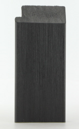
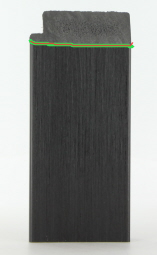
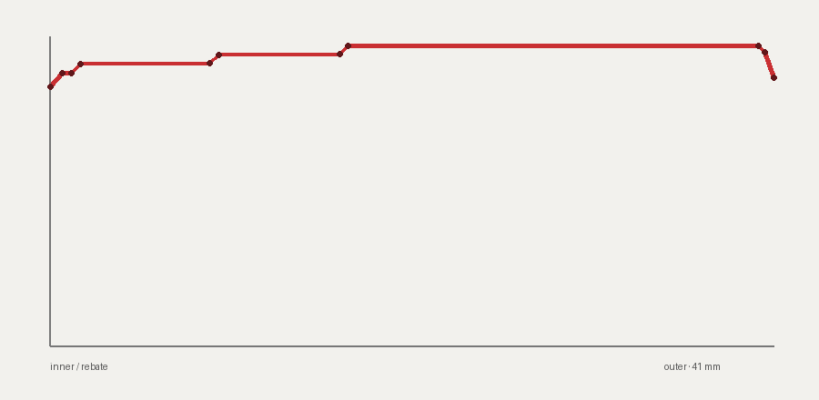
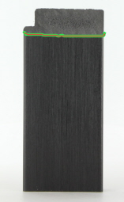
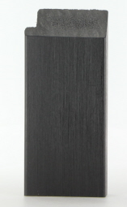
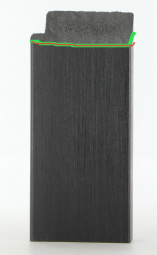

img22


edge 110.535 · depth signal 4.0 px · quality 0.621
RENDERER-INDEPENDENT SECTION PILOT

11 simplified points · exact supplier width/depth/rebate constraints · not connected to Three.js.


edge 110.535 · depth signal 4.0 px · quality 0.621


edge 111.019 · depth signal 3.92 px · quality 0.6209


edge 99.081 · depth signal 9.82 px · quality 0.6441